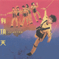
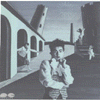
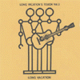
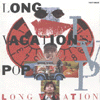
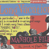

strange music page
japanese strange music * * * kera/uchoten/long vacation
|
ロングバケーションはどーなったんだだよ？って話で。
|
- 有頂天
- LONG VACATION
- ザ・シンセサイザーズ
|

- BYE-BYE
- サボタージュ
- サングラスにプールを
- パンクロームフィルム
- ころころ虫
- コレクション
- ト・モ・グ・イ
- キョコウフクロウの話
- マリオネットタウンでそっくりショー
- フューチュラ
- KERA (vocals)
- ZIN (drums)
- KUBOBRYU (bass)
- HUCKAI (guitars)
- COU (guitars)
- MU (keyboards)
- 横川理彦 (violin on 2.)
- 犬山犬子 (chorus on 10.)
- タグチトモロヲ (chorus on 10.)
- サワキカスミ (chorus on 10.)
- 友森昭一 (chorus on 10.)
- 三柴江戸蔵 (chorus on 10.)
- 橋本由香利 (chorus on 10.)
- みのすけ (chorus on 10.)
- ムー (chorus on 10.)
- 渡辺正 (chorus on 10.)
- 小出道也 (recorder on 4.)
CANYON RECORDS: D32A-0220 (1986)
#メジャー2枚目、これは結構すきかな。
COU = 河野裕一 (YAPOOS)、MUE = 三浦俊一 (P-MODEL,SONIC SKY,Hz) ですね。

- カーテン (THE FIRST HALF)
- MEANING OF LOVE
- FINE
- 本当は彼が一番利巧なのかもしれない (REALLY, HE MIGHT BE TE SMARTEST BOY)
- 僕らはみんな意味が無い (WE HAVE NO SENSE)
- SLEEPERS
- みつけ鳥 -グリム童話より-
- ダンス
- 俗界探検隊 (THE PUBLIC EXPEDITION)
- KARADA
- インサート
- 十進法パレエド (THE PARADE OF DECIMAL NUMERATIOIN)
- 隠れん坊 (HIDE-AND-SEEK)
- THE NATURAL CATASTROPHE
- カーテン (THE LATTER HALF)
- シュート・アップ
- KERA (vocals)
- ZIN (drums)
- KUBOBRYU (bass)
- HUCKAI (guitars)
- COU (guitars)
- MUE (keyboards,programming)
- Isamu Naoko (vocals on 1.15.)
- Ishino Tamao (voice on 2.)
PONY CANYON: D32A-0297 (1987)
#ロンバケのインディーズ時代の3枚目。中野テルヲ色が強くって、かなり好きです。2曲目なんて中野テルヲ在籍時のP-MODELの"MONSTERS A GO GO"ですね(P-MODELの
三界の人体地図で聴けます)
ロンバケ、全部は聴いて無いんですけど、これは結構オススメかも。地元の中古CD屋さんで\900でした。(2000.2.9)

- INTRODUCTION
- LONG LONG VACATION
- SING SING SING #2
- エノラ・ゲイの悲劇
- ウチハソバヤジャナイ
- MAC THE KNIFE
- KERA
- 中野テルヲ
- みのすけ
- MU
- Watanabe Hisao
- Senor Mikito (sax on 4.5.)
- Arimura Ritsuko (chorus on 2.3.5.)
- Terada Mayumi (chorus on 2.3.5.)
SILLY WALK RECORDS: SW-005 (1992)

- シェリーにくちずけ
- THEME
- 青空のかけら
- 君について
- VISIONARY STORIES
- LONG VACATION'S TOUCH
- RULING CLASS
- アラバマ・ソング
- THE FIGURE OF SUMMER
- BABY GO ROUND
- KERA
- 中野テルヲ
- みのすけ
- MU
- Watanabe Hisao
- Mat Hartl (shout on 2.)
- Jonas Gttfri Edsen (narration on 2.)(piano on 6.)
- Sakaide Masami (tap sound on 3.)
- Kuboyama Tsutomu (chorus on 6.)
- Terasaki Keitaro (chorus on 6.)
- 犬山犬子 (chorus on 6.10.)
東芝EMI: TOCT-6629 (1992.8.26)
- ヨーロッパ超特急
- 太陽の下の18才
- 雲
- ブルー・スカイラーキング
- Good-bye, PAPER LOVE
- 傘と電話機
- RAIN SONG
- BITTER SWEET SUNSHINE
- マダム・エピステーメーの消息
- PILLOW TALK
- 操行ゼロ
- 思い出した夢のいくつか
- いつか聴いた歌
- KERA (vocals)
- 中野テルヲ (synthesizers,computer,backing vocals)
- みのすけ (drums,guitars,backing vocals)
- 中村哲夫 (bass,backing vocals)
- Taguchi Kazuhiko (sax on 1.4.5.8.9.11.12.13.)(flute on 8.)
- Ueishi Osamu (trumpet on 4.5.7.9.11.13.)(flugelhorn on 4.6.7.11.12.)
- Saito Masaaki (trombone on 1.4.5.7.8.9.11.13.)
- 犬山犬子 (vocals on 6.)(backing vocals on 4.10.)
- Tamai Miwa (piano on 6.12.)
- Patrice Le Gouge (French voice on 2.10.)
TDK RECORDS: TDCT-1034 (1994.7.25)

- WE'RE LAUGHING IN THE HOLE
- Good-bye, PAPER LOVE (PIANO SOLO VERSION)
- いつか聴いた歌 (PIANO SOLO VERSION)
- RAIN SONG (WINTER VERSION)
- ブルー・スカイラーキング (ANOTHER FLIGHT)
- BITTER SWEET SUNSHINE II
- 操行ゼロ (HARD FOLK VERSION)
- リラのホテル
- ゴーカート・ツイスト (太陽の下の18才)
- KERA (vocals)
- 中野テルヲ (synthesizers,computer)
- みのすけ (drums,guitars)
- Tamai Miwa (piano on 2.3.8.)
- 犬山犬子 (backing vocals on 5.)
- Yasuzawa Chigusa (backing vocals on 1.)
- Mizutani Erina (backing vocals on 4.5.7.)
- Patrice Le Gourge (French voice on 9.)
- Madoka Maruko (violin on 7.)
TDK RECORDS: TDCT-1052 (1994.11.30)
#今は劇団ナイロン100%の主催者としての方が有名なケラ(ex-有頂天,ロングバケーション)の久々のバンドです。もう予想通りの純正80年代ニューウェーブです、しかもナゴムレコード復活第1弾らしいです。
あまりにも往年のピコピコした音でなんか嬉しくなっちゃいました。最近ポリシックスとか結構流行ってるみたいで、そろそろこの手の音が流行るかも知れないですね。
- だいなし
- ブロックベイ
- 1980
- ゴメンナサイ
- SUNDAY-FRIDAY
- ハッピー/アンラッキー
- ケラ (vocals)
- 三浦俊一 (guitars,synthesizers)
- CHACO (drums)
ナゴムレコード: RRCN-1001 (1998.4.5)